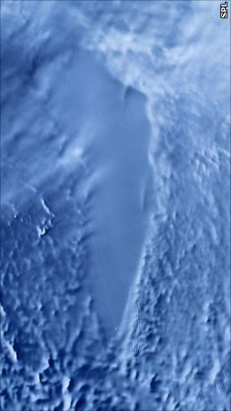

Sastrugi, or zastrugi, are sharp irregular grooves or ridges formed on a snow surface by wind erosion, saltation of snow particles, and deposition, and found in polar and open sites such as frozen lakes in cold temperate regions. The ridges are usually parallel to the prevailing winds; they are steep on the windward side and sloping to the leeward side. Smaller irregularities of this type are known as ripples (small, ~10 mm high) or wind ridges. Larger features are especially troublesome to skiers and snowboarders. Traveling on the irregular surface of sastrugi can be very tiring, and can risk breaking equipment—ripples and waves are often undercut and the surface is hard and unforgiving, with constant minor topographic changes between ridge and trough.
